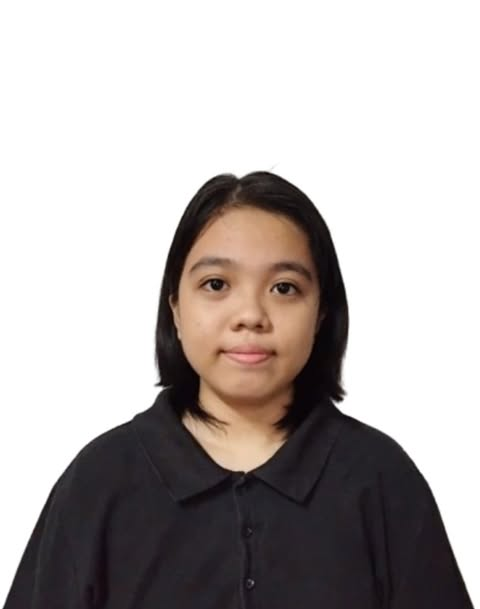

Series Section Manager & Content Organizer
I am Enrica Georgia M. Revilla, a dedicated BSIT student at Arellano University with a strong passion for using technology to solve real-world problems. I am naturally curious about how systems work and how they can be improved.
As a tech enthusiast, I continuously develop my skills in coding, networking, and UI/UX design. I enjoy exploring new technologies and understanding how digital platforms are built and optimized.
I am not just learning how to use technology — I am determined to learn how to build it. My goal is to become a skilled IT professional capable of creating efficient, user-friendly, and innovative systems that make everyday tasks easier.